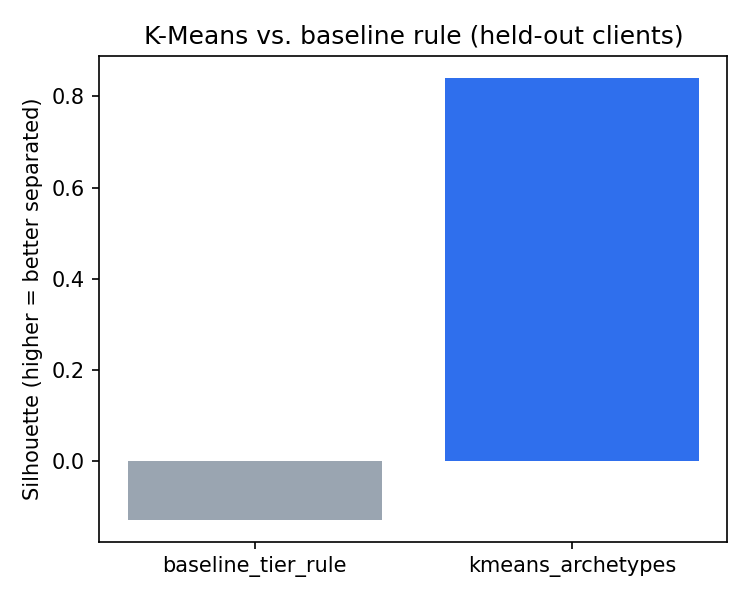
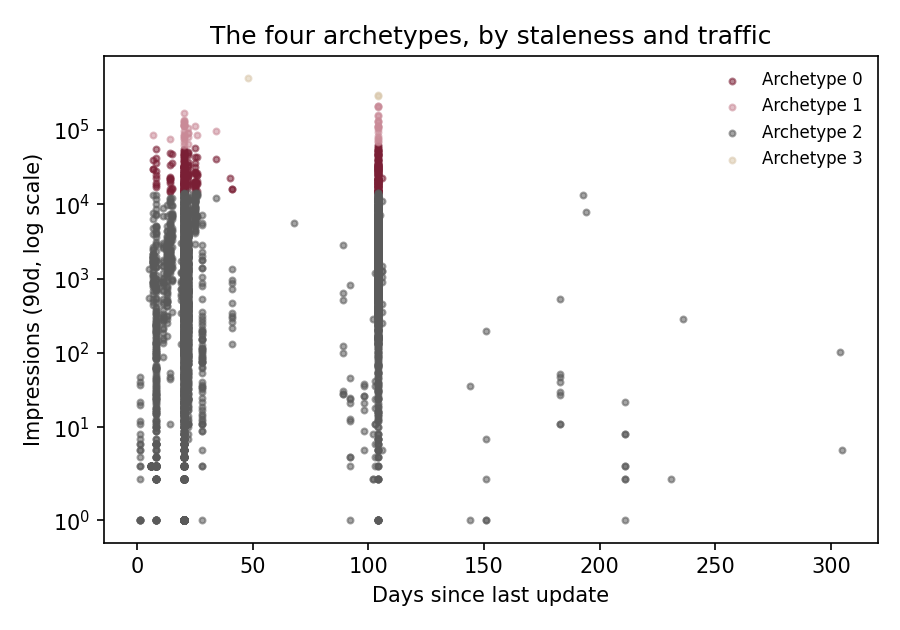
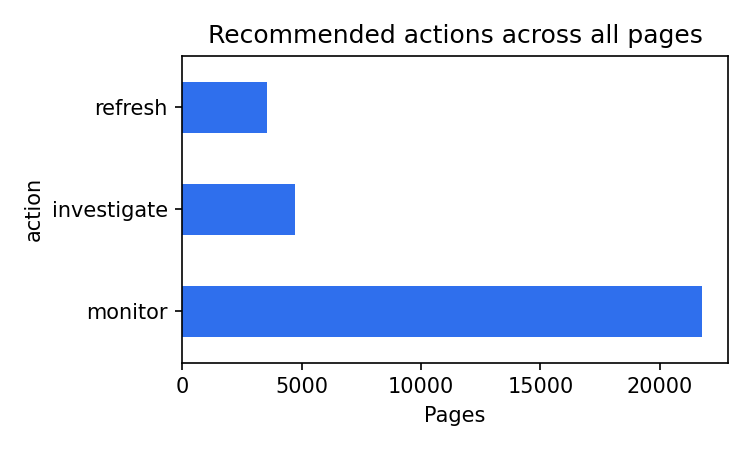

Out of thousands of published pages, which ones deserve a human editor's attention first? I grouped 30,000 pseudonymized FlyRank pages into simple performance archetypes using K-Means clustering, validated on pages from clients the model never saw while fitting. Against a transparent, hand-written tier rule on the same held-out clients, the clustering found noticeably clearer groupings. I then applied a plain staleness-and-CTR rule on top of the archetypes to produce a ranked, reason-coded queue for weekly editorial triage — a decision-support tool, not a prediction of future traffic or a causal claim about what refreshing a page will do.
The decision behind the model
FlyRank researches, writes, and publishes content into client websites, then watches search performance and optimizes what's already live. A recurring, unglamorous decision sits behind that loop: with a finite amount of editor time each week, which pages actually get opened and reviewed? Left unmanaged, this decision tends to default to whichever page someone happened to notice, or the newest content, rather than the page with the most traffic at stake.
FlyRank's product already carries hand-written rules for exactly this — a health score, quick-win tags, freshness tiers. Those rules are transparent and easy to trust, which is valuable, but they tend to run out of nuance where signals get numerous and start to interact: a page can be stale and still perform fine, or fresh and already underperforming for reasons that have nothing to do with age. This project asks a narrow, testable question: does a simple learned grouping of pages — built only from signals available at decision time — sharpen that weekly triage call without pretending to know more than the data actually supports?
The cost of getting this wrong is asymmetric. Spending an hour reviewing a page that was already fine is a wasted hour; missing a high-traffic page that has quietly been losing clicks for months is a slower, compounding loss that's much harder to notice after the fact. A ranked, explainable queue is meant to tilt the odds toward catching the second kind of mistake more often.
One snapshot, thirty thousand pages
The source is the FlyRank internship starter release,
content_refresh_anonymized.csv — 30,000 pseudonymized content items
across 32 clients, aggregated over a trailing 90-day window ending at export time.
This is a single snapshot, not a time series: every number describes "the last 90
days as of one point in time," not a trend line that can be extrapolated forward.
Deliberately excluded
A few columns were left out of every feature, score, or cluster input on purpose, not by oversight:
trend_direction/trend_pct— these columns define the growth/decline label used elsewhere in this dataset; using them as model inputs would be circular reasoning, not a genuine finding.content_id/client_id— pseudonymous identifiers, used only to build a grouped train/test split so the model is evaluated on clients it never trained on. Never used as model features.- Any FlyRank product flag (health score, priority score, quick-win tags) — these already encode a decision someone else made; using them as inputs would just reproduce that existing decision rather than test a new one.
No client names, domains, raw search queries, or credentials appear anywhere in this project's repository, notebooks, or outputs — every artifact here is public-safe by construction.
Two features, kept small on purpose
Method. K-Means clustering on two features — 90-day impressions and days since last update — kept deliberately small so every archetype is explainable in a single sentence, rather than a black box with a name attached. There is no outcome label to predict here; clustering is descriptive, not predictive. The question is "what shapes exist in this data," not "what will happen next."
Split. Pages that belong to the same client tend to share templates, publishing cadence, and editorial habits, so a random row-level split would let the model implicitly memorize a client's pattern rather than learn something general. To keep the evaluation honest, 20% of clients were held out entirely before fitting anything — the model never saw a single page from those clients while learning its clusters — and every number in the Results section below comes only from that held-out group.
Baseline. A transparent, hand-written tier-cross rule (freshness tier × impression tier) with no fitted parameters at all — essentially the same kind of if-statement logic that already exists in FlyRank's product today. This is the bar any fitted model needs to clear to be worth using in place of the simpler rule.
Leakage check. The feature list contains only
impressions_90d and days_since_last_update — no
label-derived, product-derived, or identifier column is used anywhere in the
clustering step. This was checked explicitly in the capstone notebook before any
model was fit.
Model vs. baseline, same held-out clients
Silhouette score measures how well-separated a set of groups is — higher means clearer boundaries between clusters, not "more accurate." There is no ground-truth archetype label to be right or wrong about here, so this metric answers "did the model find real structure," not "did it predict correctly."

Worth noting for fairness: the baseline rule produces 16 fine-grained tiers by construction, while K-Means was asked for only 4 broader groups — part of the gap above reflects that the baseline is simply more fragmented, not only that it fits the data worse. A K-Means run forced to also produce around 16 clusters would likely close some of this gap. The honest, directional takeaway is that a small number of learned groups separates this data at least as cleanly as a much larger set of hand-written tiers — a useful property for a human trying to hold a handful of archetypes in their head, rather than sixteen.
What the four archetypes actually look like
Reading the median profile of each archetype is more informative than the silhouette number alone — it shows what the clustering actually grouped together, in numbers a human can sanity-check:
| Archetype | Median impressions (90d) | Median days since update | Median CTR | Share of pages |
|---|---|---|---|---|
| 0 | 23,124 | 25 | 0.22 | 7.3% |
| 1 | 89,756 | 26 | 0.24 | 1.2% |
| 2 | 550 | 20 | 0.04 | 91.4% |
| 3 | 309,551 | 21 | 0.21 | 0.1% |

The honest reading: the four archetypes separate almost entirely by traffic magnitude — from a typical archetype at ~550 median impressions covering 91% of pages, up to a tiny 0.1% "mega-traffic" tail near 300,000. Median staleness barely moves across groups (20–26 days in every archetype). That is a real, useful finding on its own — most of a client's pages live in one common traffic tier, and a small number of outsized pages deserve separate handling — but it is a narrower finding than "archetypes capture both traffic and staleness jointly." The two input features were not standardized before clustering, and impressions span a far larger numeric range than days since update, so K-Means' distance calculation is dominated by the larger-scale feature. A version of this analysis with standardized features would likely produce archetypes that separate by staleness as well as traffic — a natural next iteration, not something this run claims to have already done.
What this work does not show
- No causal claim. Archetype membership and the underperformance flag are a same-snapshot comparison, not a before/after experiment. Nothing here shows that refreshing a page causes its CTR to improve — no refresh was actually carried out and measured in this dataset.
- One snapshot, not a trend. The 90-day window is a photograph, not a video — it says nothing about a page's trajectory before or after that window, and a page flagged today could already be recovering on its own.
- Modest, not sharp, separation. A silhouette of 0.84 built from two simple features indicates real structure, but should not be read as proof of "true" content archetypes that exist independent of this particular feature choice — it is a useful lens, not a hard boundary.
- Selection bias is unknown. Which pages FlyRank has historically chosen to refresh is not present in this dataset, so a claim like "refreshed pages later did better" cannot be tested with this data alone.
- The model never reads the page. A flagged page could be a genuine content problem, or it could be a branded or navigational query where a low click-through rate is entirely normal — a human has to open the page and check before deciding anything.
What an editor opens first
On top of the archetypes, a transparent rule assigns each page one of three actions with a plain, one-line reason code attached:
refresh— stale (not updated in 31+ days), still visible (500+ impressions in the last 90 days, so it's worth a human's time), and underperforming (click-through rate below the median of all visible pages).investigate— visible and underperforming, but not stale — this is deliberately kept separate fromrefresh, because a refresh may not be the right fix here; something else (intent mismatch, page UX, a tracking gap) needs a look first.monitor— everything else: not enough traffic yet to justify review time, or already performing acceptably.

Tomorrow, in practice: an editor opens the refresh
tier first, sorted by traffic so the biggest upside is reviewed first. Before
editing anything, they should confirm the query isn't branded or navigational,
check for a recent ranking shake-up that a 90-day trailing average wouldn't catch,
and — for investigate pages specifically — rule out a tracking gap
before assuming a genuine content problem. This queue is a starting point for a
person's review. It never executes a change on its own, and nothing about a page's
rank should be read as a guarantee that fixing it will move the numbers.
Everything traces back to the repo
Full code: github.com/hebawl/starter. The capstone notebook is work/notebooks/capstone.ipynb — every number and both charts on this page come directly from that notebook, executed top to bottom with a fixed random seed. The weekly notebooks it builds on are in work/notebooks/, showing the full path from first exploration through validation and the weekly action playbook this capstone extends.
To re-run everything from a fresh clone:
pip install -r requirements.txt
jupyter nbconvert --to notebook --execute work/notebooks/capstone.ipynbRandom seed 42 is fixed throughout, including the client train/test split and the K-Means fit, so a fresh run should reproduce the numbers on this page.
Built on the FlyRank ML Internship dataset — flyrank.ai.